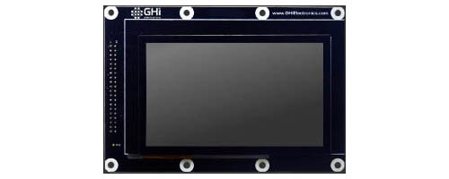

SITCore Development Boards

We offer two development boards making it possible to start programming your application within minutes without designing or building new hardware. These boards are not only suitable for prototypes, but for short production runs of products as well.
SITCore SC20260 Development Board
Ordering Part Number:
The SC20260 Dev Board is the fastest and easiest way to start developing with the SC20260 DIMM module. This board comes with a 4.3 inch capacitive touch display. It provides a socket for the SC20260D/SC20260DW, standard connectors for input/output, and three 40 pin socket headers for connecting peripherals and a display. Peripheral connectors include external power, Ethernet, CAN, USB host and client, RTC backup battery, DCMI interface and an SD card slot. It also has a buzzer, LEDs, a reset button, and user programmable boot buttons.
To start development using the SC20260 Dev Board, just plug a SC20260D or SC20260DW DIMM into the socket on the board, plug in the display if needed, and connect the board's USB Client port to a host computer using a micro USB cable. Go to the Getting Started page in the TinyCLR section of the documentation page for further instructions.
The board can be powered through either the USB connectors or the barrel jack. Always use the barrel jack for power when using displays, especially the larger ones. USB does not provide sufficient power needed for displays.
Tip
The barrel jack is pin positive, sleeve negative, 2.1mm. It is capable of anywhere 7V to 30V. 1A of power should be enough for most needs.
UCD-D43-A (Included with SC20260 Development Board)

- Display Module: ER-TFT043-3
- Touch Panel: ER-TPC043-2
This display module has a 4.3" 480x272 TFT display with capacitive touch screen. It plugs directly into the SC20260 Dev Board and uses I2C for capacitive touch. The backlight is controllable through ?. The capacitive touch controller is connected to I2C ? with the interrupt pin on ?.
The TinyCLR Samples repo has usage examples. You can learn more in the Graphics and Display sections of the TinyCLR tutorials.
See below for the display configuration values:
| Property | Value |
|---|---|
| Width | 480 |
| Height | 272 |
| DataFormat | RGB565 |
| Pixel Clock Rate | 8 MHz <= x <= 16MHz |
| Pixel Polarity | low |
| DataEnable Is Fixed | false |
| DataEnable Polarity | low |
| Horizontal Back Porch | 46 |
| Horizontal Front Porch | 16 |
| Horizontal Sync Polarity | low |
| Horizontal Sync Pulse Width | 1 |
| Vertical Back Porch | 23 |
| Vertical Front Porch | 7 |
| Vertical Sync Polarity | low |
| Vertical Sync Pulse Width | 1 |
SITCore SC20100 Development Board
Ordering Part Number:
The SC20100 Dev Board includes a SC20100 soldered to the board and a built in 1.8 inch color serial display. It has three 40 pin socket headers for connecting peripherals and a display. Peripheral connectors include external power, Ethernet, CAN, USB host and client, RTC backup battery, DCMI interface and an SD card slot. It also has a buzzer, LEDs, a reset button, and user programmable boot buttons.
To start development using the SC20100 Dev Board, just connect the board's USB Client port to a host computer using a micro USB cable. Go to the Getting Started page in the TinyCLR section of the documentation page for further instructions.
The board can be powered through either the USB connectors or the barrel jack. Always use the barrel jack for power when using displays, especially the larger ones. USB does not provide sufficient power needed for displays.
Tip
The barrel jack is pin positive, sleeve negative, 2.1mm. It is capable of anywhere 7V to 30V. 1A of power should be enough for most needs.
Tip
There are 2 LEDs by the USB connector, for 3.3V and 5V. They are useful to check that you have supplied the necessary power.
You can visit our main website at www.ghielectronics.com and our community forums at forums.ghielectronics.com.